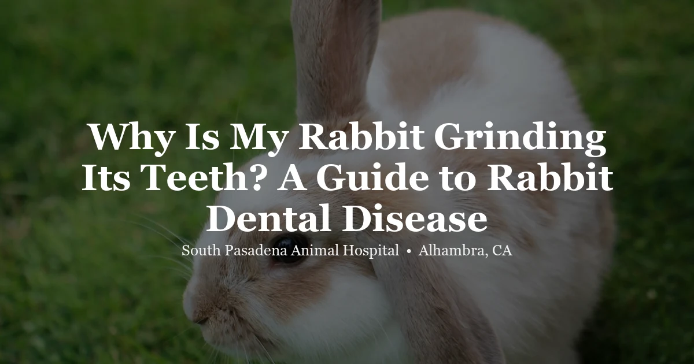

April 17, 2026 · 8 min read
Why Is My Rabbit Grinding Its Teeth? A Guide to Rabbit Dental Disease

Rabbit dental problems are among the most common — and most frequently missed — issues we see in exotic practice. Unlike dogs and cats, rabbit dental disease develops silently. By the time a rabbit is visibly unwell — sitting hunched, refusing food, losing weight — their teeth may have been causing problems for months. If you have a pet rabbit, understanding dental disease is one of the most important things you can do for their long-term health. You can learn more about what to expect at a rabbit vet visit in Alhambra at our clinic.
Rabbit Tooth Basics: Why They're Different
Rabbits are lagomorphs, not rodents — a distinction that matters when it comes to their teeth. Adult rabbits have 28 teeth in total: 6 incisors (including two small "peg teeth" tucked directly behind the upper front incisors), 12 premolars, and 10 molars. Every single one of those teeth grows continuously throughout the rabbit's life. This is called being hypsodont, and it's the biological root of most rabbit dental problems.
In a healthy rabbit eating the right diet, teeth wear down at the same rate they grow. The key is the lateral (side-to-side) grinding motion a rabbit makes when chewing long-strand hay. This grinding action is what keeps the cheek teeth at the proper length and angle. A rabbit that eats plenty of loose hay all day is, in effect, performing constant passive dental care.
When that wear doesn't happen — because the diet is too low in hay, or because the tooth alignment is off — teeth elongate. They develop sharp points and spurs that cut into the tongue and the inside of the cheeks. Root elongation pushes downward into the jaw or upward toward the skull. The consequences range from painful mouth sores to life-threatening jaw abscesses.
Types of Rabbit Dental Disease
Incisor Malocclusion
This is the most visible form of dental disease because the front teeth are actually accessible to look at. Under normal circumstances, the upper and lower incisors meet in a scissor-like bite and wear each other down evenly. When the bite is misaligned — a condition called malocclusion — the teeth grow unchecked, curling outward or inward in dramatic curves.
Certain breeds are especially prone to incisor malocclusion because of the shape of their skulls. Brachycephalic breeds — Lionhead rabbits, Lop varieties, and Netherland Dwarfs — have shortened faces that compress the tooth roots and predispose them to misalignment. In these rabbits, incisor malocclusion is often heritable and progressive.
Treatment options include regular trimming under anesthesia to keep the teeth at a manageable length, or full incisor extraction. Extraction may sound drastic, but rabbits do remarkably well without front teeth as long as their cheek teeth are healthy — they adapt quickly and continue eating normally.
Cheek Tooth Problems
Cheek tooth disease is more insidious and far more common than incisor problems. You cannot see these teeth without a proper examination, and even then, a thorough cheek tooth evaluation usually requires anesthesia and dental radiographs. This is why dental disease in rabbits is so frequently missed in routine visits.
As cheek teeth elongate and develop abnormal points, sharp spurs form. Lingual spurs cut into the tongue; buccal spurs cut into the cheeks. These lesions are painful, interfere with eating, and can become infected. Over time, tooth root elongation can cause visible jaw swelling as roots push into the bone, and — because rabbit tooth roots extend remarkably close to the eye socket — cheek tooth problems can even cause eye discharge and watery eyes on the affected side.
Advanced cheek tooth disease often results in jaw or facial abscesses, which are among the most challenging conditions in rabbit medicine to treat successfully.
Signs of Dental Disease in Rabbits
Because rabbits instinctively hide pain and illness (a survival behavior from being a prey species), you need to know what subtle changes to watch for. The following are the key warning signs:
- Selective eating — preferring soft foods over hay. This is often the very first sign of cheek tooth pain. A rabbit that suddenly ignores their hay but still eats pellets or vegetables is telling you something important: hay hurts to chew.
- Dropping food (quidding). You may notice partially chewed lumps of food falling from your rabbit's mouth, or find wet matted food under the chin. This happens when chewing is too painful to complete.
- Weight loss. Get into the habit of weighing your rabbit weekly on a kitchen scale. Small, consistent losses add up. If you can feel a prominent keel bone (the sternum ridge) and your rabbit looks lean through the flanks, muscle wasting may already be underway.
- Wet chin or dewlap. Persistent moisture under the chin or on the dewlap can indicate excessive drooling due to oral pain. Check daily — the fur in these areas mats easily and the dampness can lead to skin infections.
- Eye discharge. A watery or crusty eye that appears without any injury or obvious irritant may indicate that elongated cheek tooth roots are pressing on the nasolacrimal duct, which runs very close to the upper tooth roots.
- Grinding (bruxism). A rhythmic, repetitive grinding sound is a pain response. Note that happy, relaxed rabbits also make a softer "tooth purring" sound — a gentle, subtle vibration that is distinct from the louder, harsher grinding of bruxism. Consistent grinding warrants a veterinary assessment.
- Facial swelling. A firm lump along the jaw or under the chin is a red flag. In rabbits, this almost always means a dental abscess, which is a veterinary emergency requiring prompt treatment.
Treatment Options
All rabbit dental procedures require general anesthesia with appropriate anesthetic protocols. Rabbit anesthesia carries higher risk than dogs and cats, but in experienced hands it is very manageable. Attempting to trim or file rabbit teeth without anesthesia causes pain and can shatter tooth structure.
- Dental burring (filing) under anesthesia. The most common procedure for cheek tooth disease. A dental burr is used to smooth sharp points and spurs. Most affected rabbits require this every few months — it manages the condition but rarely cures it, since the underlying tooth geometry doesn't change.
- Incisor trimming. Appropriate for mild overgrowth in cases where the tooth roots and alignment are still reasonably intact. Not a permanent solution for heritable malocclusion.
- Incisor extraction. The preferred long-term treatment for heritable incisor malocclusion. It is a one-time procedure, and the vast majority of rabbits adapt well and continue to eat normally afterward.
- Abscess treatment. Rabbit dental abscesses are notoriously difficult to treat. Unlike cats and dogs, rabbits produce thick, caseous (cheese-like) pus that does not drain easily. Effective treatment typically involves surgical debridement to remove all infected tissue, antibiotic-impregnated implants placed in the abscess cavity, and a prolonged course of systemic antibiotics. Some cases require multiple surgeries. Prognosis depends heavily on location and severity.
Prevention: The Role of Diet
Dietary management is the single most important thing an owner can do to support rabbit dental health. Unlimited grass hay — timothy, orchard grass, or meadow hay — should make up at least 80% of an adult rabbit's diet. This is not a suggestion; it is a core requirement of lagomorph biology.
The long strands of hay require sustained lateral chewing, which is the mechanical force that keeps the cheek teeth worn to the proper angle and length. Pellets, vegetables, and treats do not provide the same wear. A rabbit living on a pellet-heavy, hay-light diet is on a slow trajectory toward cheek tooth disease, regardless of breed.
Pellets should be offered in limited quantities (roughly 1/4 cup per 5 lbs of body weight per day for adults). Fresh leafy greens are a healthy addition. Sugary treats should be rare. But none of this matters as much as the hay.
Alongside diet, regular veterinary checkups are essential — because you cannot reliably detect cheek tooth problems at home. We recommend scheduling routine exotic animal exams at least once a year for healthy adult rabbits, and every six months for brachycephalic breeds or rabbits with known dental history.
Frequently Asked Questions
How often should I have my rabbit's teeth checked?
At minimum, annually for healthy adult rabbits. If your rabbit is a brachycephalic breed (Lionhead, Lop, Netherland Dwarf) or has a known history of dental disease, every six months is more appropriate. Keep in mind that a meaningful cheek tooth examination almost always requires anesthesia — a quick visual check at a routine visit can identify obvious incisor problems but will miss most cheek tooth disease.
Can I trim my rabbit's teeth at home?
No. This is one of the most important things to know about rabbit dental care. Clipping rabbit teeth with nail clippers or wire cutters — a technique still circulating online — causes the teeth to shatter and fracture, creating jagged edges, pulp exposure, and pain. All rabbit dental procedures need to be performed by a veterinarian under anesthesia, with proper dental equipment designed for the purpose.
My rabbit stopped eating yesterday. Could it be dental?
Possibly — but sudden eating cessation in rabbits requires same-day or next-day veterinary attention regardless of the cause. GI stasis (a shutdown of gut motility) is another very common reason a rabbit stops eating, and it can become life-threatening within 24 to 48 hours if untreated. Do not wait to see if your rabbit "comes around." A rabbit that has not eaten in 12 hours or more needs to be seen.
Do you see rabbits at SPAH?
Yes. We are currently accepting new exotic patients, including rabbits. You can schedule an exotic animal exam online or call us at (626) 441-1314. We see rabbits for wellness exams, dental evaluations, GI concerns, and other health issues at our Alhambra clinic.
The Bottom Line
Rabbit dental disease is silent until it isn't — and by the time the symptoms are obvious, there is often significant disease already established. The good news is that early intervention is far more effective and far less expensive than treating advanced disease. With regular checkups and a hay-first diet, many rabbits with dental tendencies can live comfortably for years.
If you've noticed any of the warning signs above, or if it has been more than a year since your rabbit's last exam, book a visit. You can learn more about what we offer at our exotic animal exams page, or contact us directly with any questions.